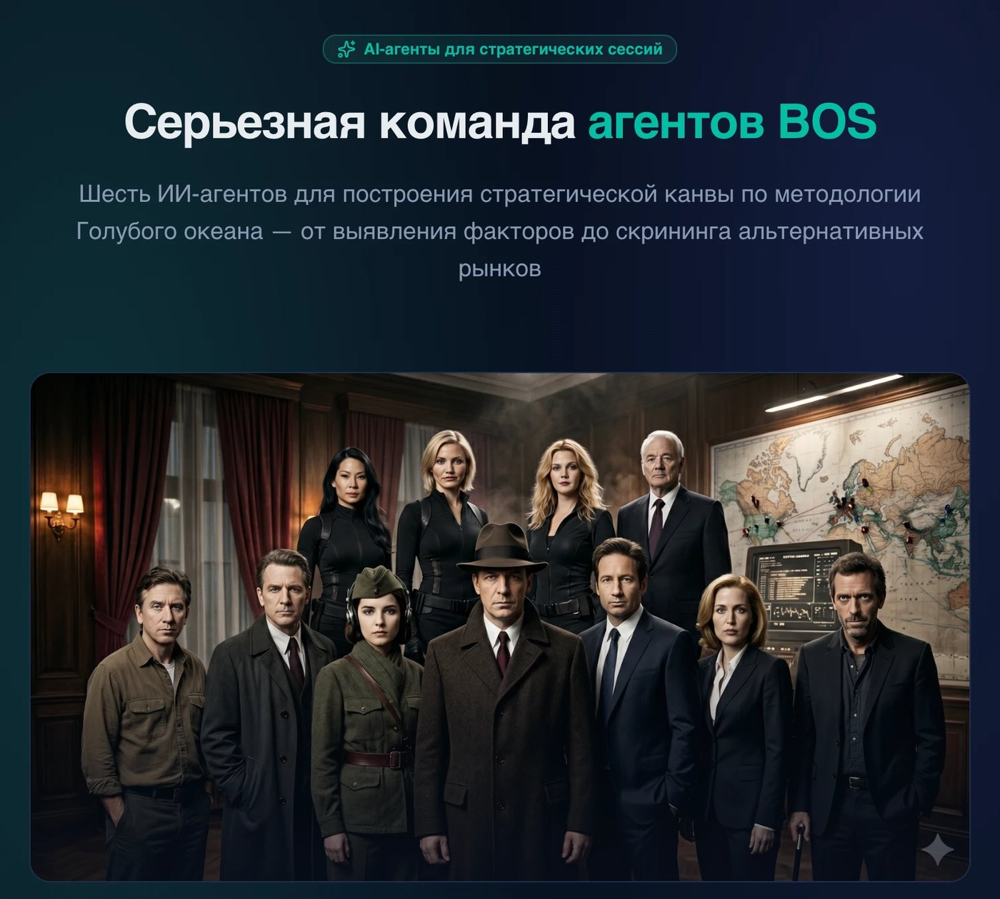
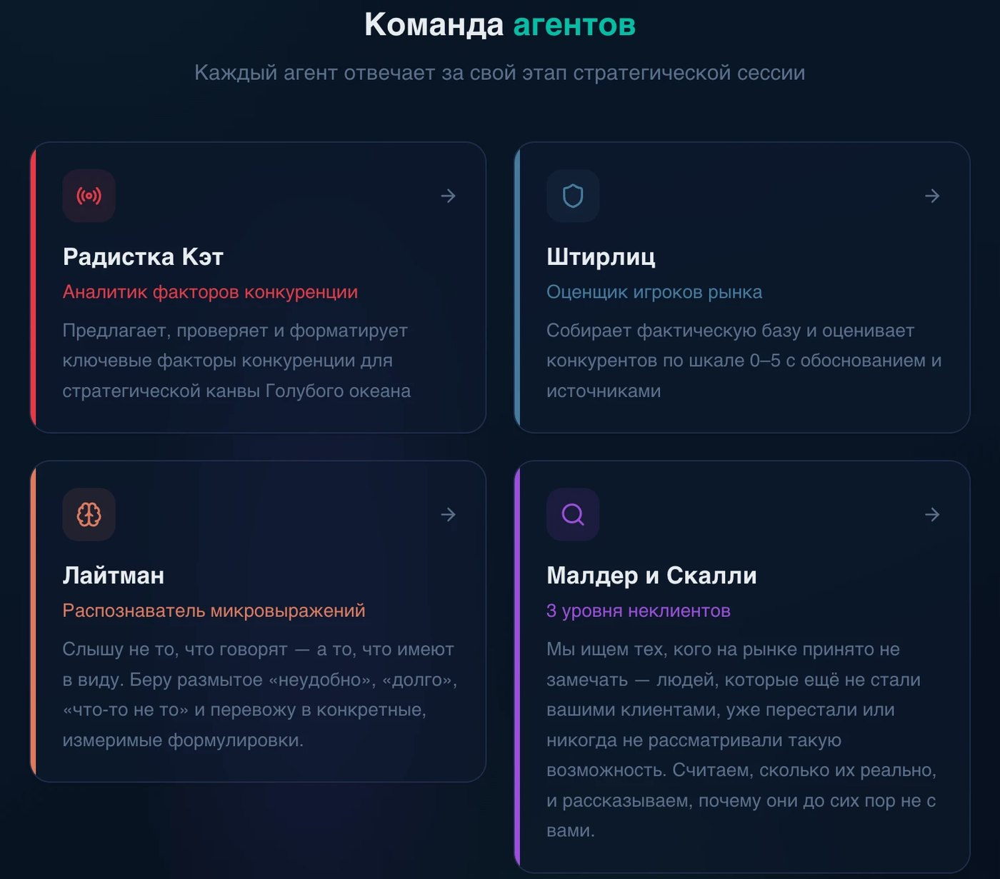
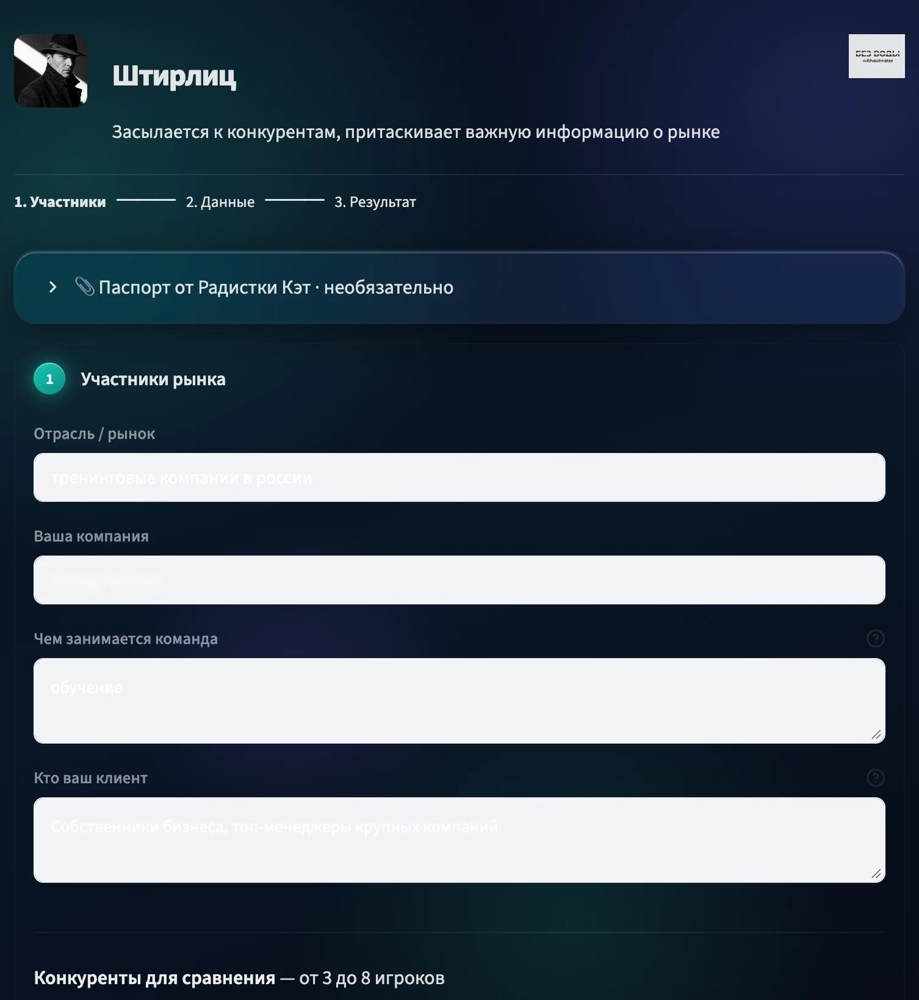
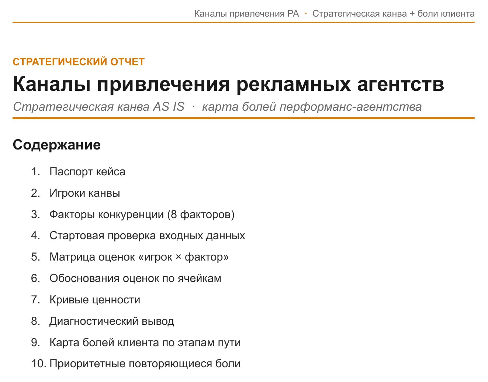
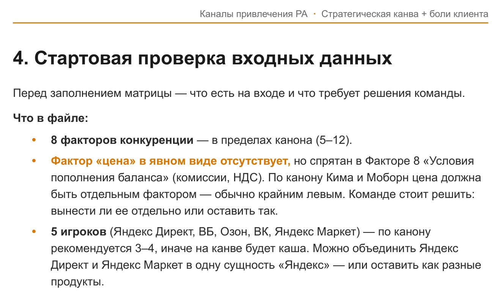
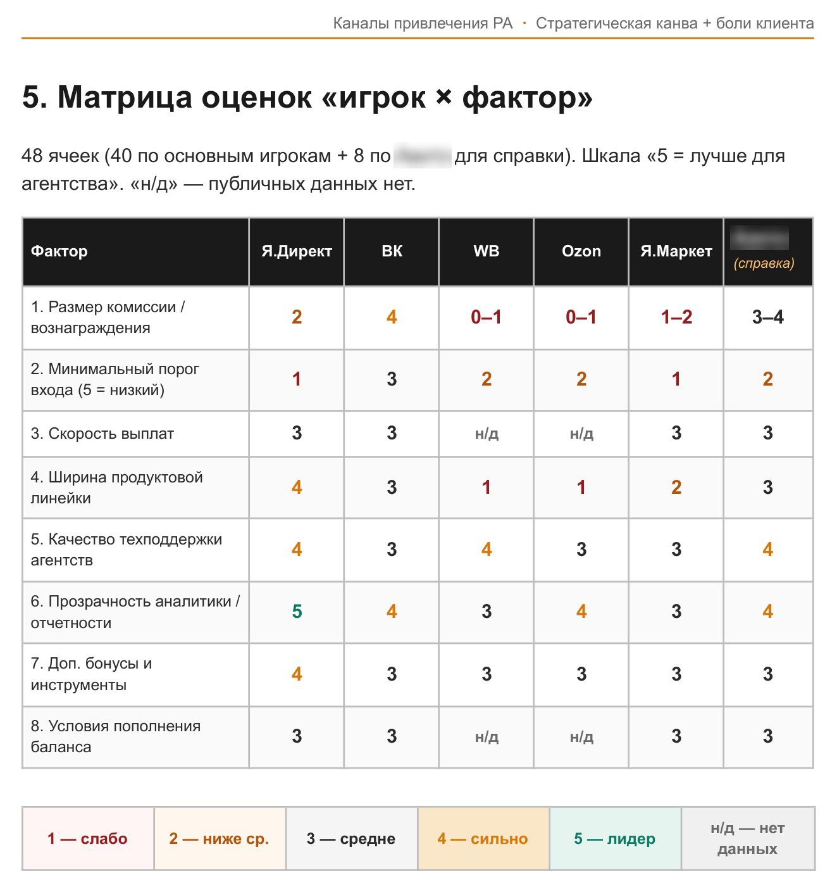
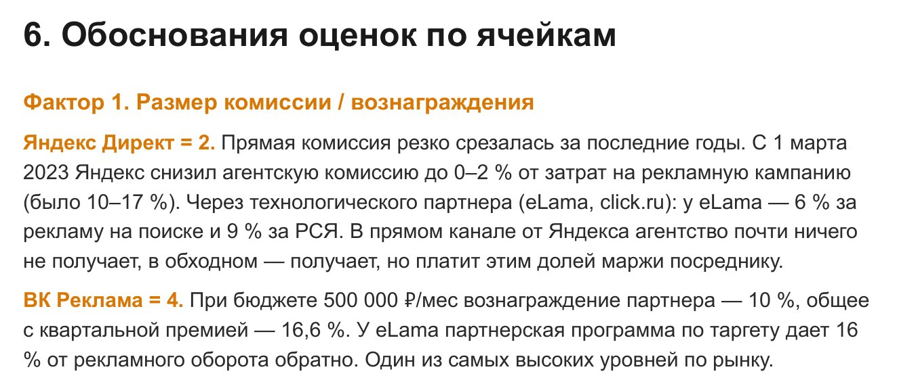
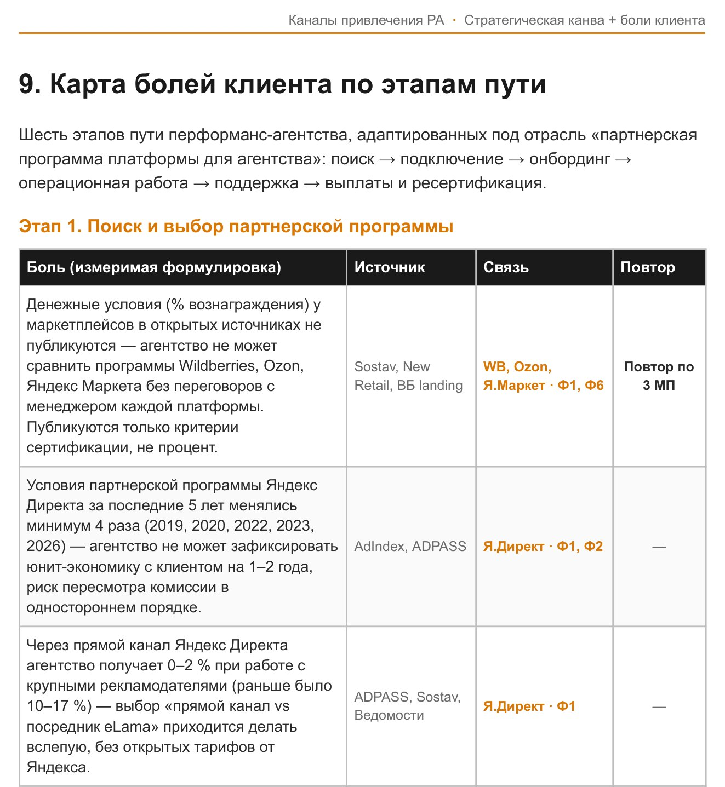

Участники20 человек из отделов продаж, продукта, аналитики, проектной команды и маркетинга
ФорматСтратегическая сессия с ИИ-ассистентами
РезультатКоманда сформулировала гипотезы и перенесла около 15 прикладных инициатив в бэклог
Результаты
За 5 часов 20 участников из нескольких функций прошли 4 уровня стратегического анализа: текущее положение, конкурентное поле, клиентский путь и потенциальные новые зоны роста.
Результат команды:
Определила, что влияет на выбор их клиентов и партнеров и где компания может усилить свое предложение
Увидела сильные стороны своего предложения и потребности партнеров и клиентов, которые пока недостаточно закрыты на рынке
Нашла барьеры, из-за которых клиентам сложно начать и продолжать сотрудничество с площадкой
Определила, кто может стать новым источником роста и почему сегодня они пока выбирают другие решения
Все сформированные инициативы перенесли в бэклог команды для последующей приоритизации и проработки.
Команда ИИ-агентов

Команда агентов BOS: ИИ-агенты для построения стратегической канвы по методологии Голубого океана

Карточки агентов: факторы конкуренции, оценка игроков рынка, измеримые формулировки, неклиенты

Интерфейс Штирлица: 3 шага — участники рынка, данные, результат; на вход можно передать паспорт от Радистки Кэт. Пример заполнения, название компании скрыто
Отчет агента

Стратегическая канва AS IS и карта болей клиента: 10 разделов отчета

Перед оценкой агент сверяет входные данные с каноном методологии и выносит спорные решения команде

Матрица «игрок × фактор»: 8 факторов конкуренции, оценки 0–5, «н/д» там, где публичных данных нет. Название одного из игроков скрыто

Обоснования оценок по ячейкам матрицы

Карта болей по 6 этапам пути клиента: измеримая формулировка, источник, связь с факторами канвы
Обратная связь
Клиент отметил, что формат оказался новым для команды, вызвал интерес и дал ожидаемый эффект вовлеченности:
«Никто не ожидал такого формата. Он получился новым, вовлекающим и интересным. Мы попали в точку: ожидаемый эффект сработал»
В этом проекте команда:
синхронизировала видение сотрудников разных функций
расширила поле анализа за пределы текущих процессов
отделила потенциальные стратегические ставки от локальных решений